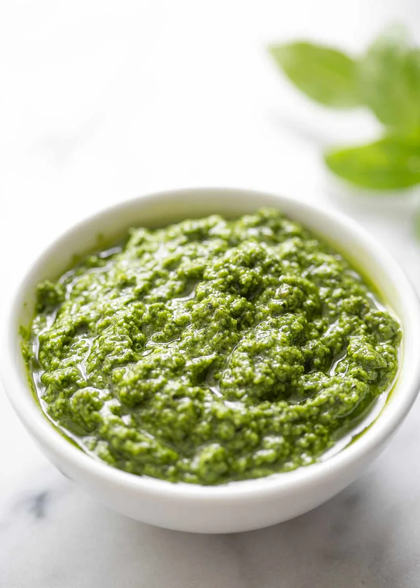

Document
Basil Pesto

Good with practically everything!
Classic basil pesto is a vibrant and aromatic Italian sauce made primarily from fresh basil leaves, pine nuts, garlic, Parmesan cheese, and extra virgin olive oil. The ingredients are traditionally ground together using a mortar and pestle, but modern recipes often use a food processor for convenience. The result is a bright green, smooth, and slightly chunky sauce with a rich, nutty flavor and a hint of garlic. It’s perfect for tossing with pasta, spreading on sandwiches, or using as a dip. The key to a delicious pesto is using high-quality, fresh ingredients.
Alright, amici, basta chiacchiere e mettiamoci al lavoro! Time to make some pesto that'll make your Nonna proud!
Ingredients
- 2 cups fresh basil leaves, packed
- 1/2 cup grated Parmesan cheese
- 1/2 cup extra virgin olive oil
- 1/3 cup pine nuts
- 3 garlic cloves, minced
- Salt and pepper to taste
Instructions
- Prepare the Ingredients:
- Wash and thoroughly dry the basil leaves.
- Peel and mince the garlic cloves.
- Toast the Pine Nuts:
- In a small, dry skillet over medium heat, toast the pine nuts until golden brown, stirring frequently. Be careful not to burn them.
- Blend the Ingredients:
- In a food processor, combine the basil leaves, toasted pine nuts, and minced garlic. Pulse several times until coarsely chopped.
- Add the Cheese and Oil:
- Add the grated Parmesan cheese. With the processor running, slowly pour in the olive oil until the mixture is smooth and well combined. You may need to scrape down the sides of the bowl occasionally.
- Season to Taste:
- Taste the pesto and season with salt and pepper as needed. Pulse a few more times to mix in the seasoning.
- Store and Serve:
- Transfer the pesto to a jar or airtight container. It can be refrigerated for up to a week or frozen for longer storage. Enjoy it with pasta, on sandwiches, or as a dip!
This vibrant, flavorful pesto will elevate your dishes, whether you’re tossing it with pasta, spreading it on a sandwich, or using it as a zesty dip. Buon appetito, and may each bite transport you straight to the heart of Italy!